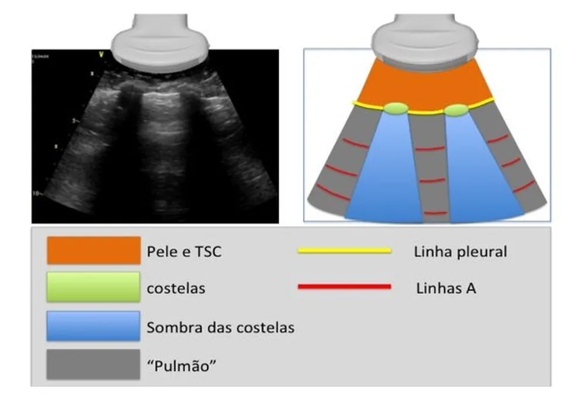
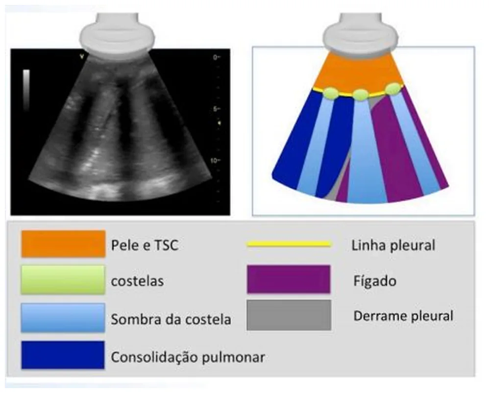
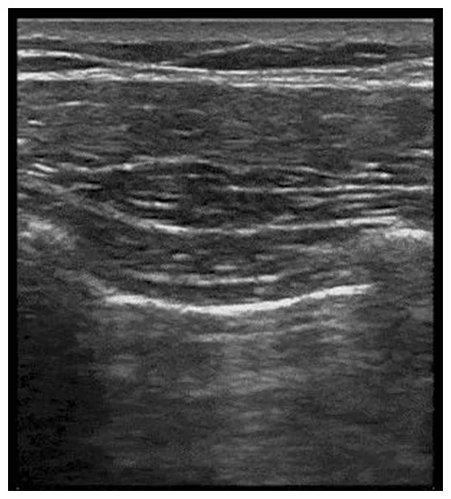
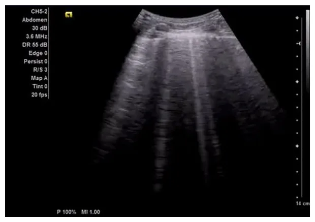
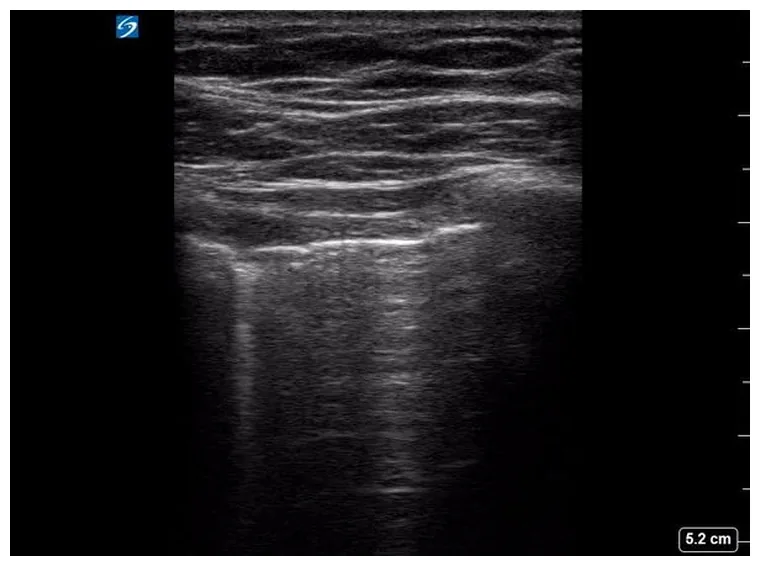

Pneumologia · 63 min · BTS 2023 e ATS/STS/STR 2018 · monografia
Derrame pleural e doenças da pleura
Toda a investigação do derrame pleural gira em torno de uma bifurcação — transudato ou exsudato —, mas a decisão que muda desfecho vem antes dela e depois dela: antes, se este derrame precisa de agulha; depois, se precisa de dreno hoje. Este texto percorre o caminho na ordem em que ele acontece à beira do leito: o ultrassom que substituiu a percussão, a toracocentese guiada, os critérios de Light e as três correções que os salvam do erro, o pH que indica dreno antes de haver pus, o fibrinolítico que só funciona acompanhado, e a escolha entre pleurodese e cateter de longa permanência no derrame neoplásico — com os números dos ensaios que sustentam cada uma.
1. Começar pelo derrame que NÃO precisa de agulha
A pergunta inicial não é "transudato ou exsudato": é se este derrame precisa ser puncionado. Errar aqui produz os dois erros mais comuns da enfermaria em direções opostas — puncionar quem só precisava de diurético e adiar a punção de quem estava perdendo a janela do dreno.
Há uma exceção na direção oposta, e ela também é comum: derrame que persiste depois do tratamento otimizado da insuficiência cardíaca, ou que é assimétrico o suficiente para chamar atenção, merece punção mesmo com diagnóstico cardíaco estabelecido. Cardiopata também tem neoplasia, embolia e tuberculose.
2. Como enxergar: radiografia, ultrassom e tomografia
O exame físico clássico — macicez à percussão, murmúrio vesicular abolido, frêmito toracovocal reduzido, com egofonia no limite superior do líquido — continua orientando, mas não define volume nem guia agulha. A imagem faz as duas coisas, e cada método tem um limiar diferente.

Dois cuidados de leitura da radiografia decidem conduta. No paciente deitado — o do CTI, o do pós-operatório — o líquido se espalha em lâmina posterior, não faz menisco e apenas "vela" o hemitórax de forma difusa, com a trama vascular ainda visível através da opacidade: o volume é rotineiramente subestimado. E o derrame subpulmonar imita cúpula elevada, com o ponto mais alto deslocado lateralmente e, à esquerda, a bolha gástrica afastada do diafragma.
O ultrassom torácico resolve as duas armadilhas e passou a ser o exame que governa o procedimento. A diretriz de doença pleural da British Thoracic Society de 2023 é explícita: toda punção pleural deve ser guiada por imagem, porque isso aumenta a chance de obter líquido e reduz a punção de órgão. Não se trata de conforto — trata-se de não atravessar fígado ou baço.




A tomografia entra quando a pergunta é sobre a pleura em si ou sobre o que está por baixo: espessamento pleural nodular, comprometimento circunferencial, envolvimento mediastinal, massa parenquimatosa, loculações complexas antes de cirurgia. Idealmente é feita com o líquido ainda presente, que serve de contraste natural para a superfície pleural — drenar tudo antes da tomografia joga fora informação.
flowchart TD
A["Derrame pleural"] --> B{"Bilateral, sem febre,
com insuficiência cardíaca clara?"}
B -->|"sim"| C["Tratar a causa
e reavaliar em 48-72 h"]
C --> C1{"Persiste ou é assimétrico?"}
C1 -->|"sim"| D
C1 -->|"não"| C2["Seguir tratando a causa"]
B -->|"não"| D["Ultrassom à beira do leito"]
D --> E{"Líquido acessível?"}
E -->|"não, muito pequeno"| F["Acompanhar ou tomografia"]
E -->|"sim"| G["Toracocentese guiada"]
G --> H{"Aspecto do líquido"}
H -->|"pus franco"| I["Empiema: dreno AGORA"]
H -->|"não purulento"| J["Critérios de Light
+ pH, glicose, celularidade, cultura"]
J --> K{"Transudato ou exsudato?"}
K -->|"transudato"| L["Tratar a doença de base"]
K -->|"exsudato"| M["Definir a causa:
parapneumônico, neoplásico, tuberculose, outros"]
3. A toracocentese
Com orientação ultrassonográfica, a toracocentese é segura mesmo com alterações leves de coagulação — a diretriz britânica não define um valor de plaquetas ou de INR abaixo do qual o procedimento esteja proibido, e a correção rotineira de distúrbios leves antes de puncionar não se justifica. O que importa é o operador ver o líquido, marcar o ponto com o paciente na posição do procedimento e não puncionar abaixo do nível do diafragma.
- Marcar com o ultrassom, puncionar na sequência, sem trocar a posição do paciente entre uma coisa e outra. Ponto marcado com o paciente sentado e punção feita deitado é um dos mecanismos clássicos de complicação.
- Colher em três destinos: tubo seco e com anticoagulante para bioquímica e celularidade; seringa heparinizada, processada como gasometria, para pH; frascos de hemocultura e tubo estéril para microbiologia. O volume enviado para citologia importa: quanto maior, maior o rendimento.
- Colher sangue no mesmo momento para proteína, DHL e albumina — os critérios de Light são razões entre líquido e soro, e soro colhido dias depois não serve.
- Retirar no máximo cerca de 1,5 L por sessão, ou interromper antes diante de dor torácica, tosse persistente ou desconforto — os três sinais de que a pleura está sendo tracionada.
- Radiografia depois não é obrigatória de rotina em procedimento guiado e sem intercorrência; é obrigatória se houve dificuldade técnica, múltiplas passagens, aspiração de ar ou sintoma novo.
As demais complicações a conhecer são pneumotórax, hemotórax por lesão de artéria intercostal — que corre logo abaixo da borda inferior da costela, motivo pelo qual a agulha entra rente à borda superior da costela de baixo —, punção de baço ou fígado e infecção do espaço pleural.
4. Transudato ou exsudato: Light e as três correções
Os critérios de Light classificam o líquido como exsudato se pelo menos um for verdadeiro:
| Critério | Corte |
|---|---|
| Proteína do líquido ÷ proteína do soro | > 0,5 |
| DHL do líquido ÷ DHL do soro | > 0,6 |
| DHL do líquido | > ⅔ do limite superior do normal sérico |
Meio século depois, eles continuam sendo o padrão porque são muito sensíveis para exsudato. O preço dessa sensibilidade é conhecido e previsível: classificam mal cerca de um quarto dos transudatos, e quase sempre o mesmo paciente — o cardiopata que já recebeu diurético. A diurese concentra o líquido pleural, sobe proteína e DHL, e um transudato atravessa a linha.
Vale registrar o que a correção não é: ela não serve para reclassificar como transudato um derrame de paciente com febre, emagrecimento ou dor pleurítica. Diante de discordância entre clínica e laboratório, o laboratório perde só quando a clínica é inequívoca e a única explicação plausível é a diurese.
5. O que cada exame do líquido decide
| Exame | O que decide |
|---|---|
| Proteína, DHL, albumina | classificação de Light e sua correção |
| pH (seringa heparinizada, como gasometria) | indicação de drenagem no parapneumônico: < 7,2 define complicado |
| Glicose | < 40 a 60 mg/dL acompanha o pH baixo; muito baixa em empiema, artrite reumatoide e neoplasia avançada |
| Celularidade com diferencial | Neutrófilos: processo agudo, parapneumônico. Linfócitos: tuberculose, neoplasia, quilotórax, pós-cirurgia cardíaca. Eosinófilos > 10%: ar ou sangue prévios na pleura, fármacos, parasitas, asbesto |
| Gram, cultura e frascos de hemocultura | agente do empiema — semear em frasco de hemocultura aumenta o rendimento |
| Citologia oncótica | neoplasia; sensibilidade em torno de 60% na primeira amostra, sobe com a segunda |
| ADA e pesquisa de micobactéria | tuberculose pleural |
| Amilase | pancreatite, ruptura de esôfago, neoplasia |
| Triglicerídeos e colesterol | quilotórax e pseudoquilotórax |
| Hematócrito do líquido | hemotórax se > 50% do hematócrito sérico |
6. Derrame parapneumônico e empiema
Cerca de 40% das pneumonias cursam com derrame, e a pergunta é sempre a mesma: este derrame precisa de dreno? A resposta tem prazo, porque o derrame parapneumônico evolui em três fases — exsudativa, fibrinopurulenta e organizada — em dias, não semanas.
| Categoria | Achados | Conduta |
|---|---|---|
| Não complicado | livre, pequeno, pH > 7,2, glicose normal, Gram e cultura negativos | antibiótico apenas |
| Complicado | pH < 7,2, glicose baixa, DHL alta, loculações ao ultrassom, Gram ou cultura positivos | drenagem torácica |
| Empiema | pus franco | drenagem imediata, sem esperar bioquímica |
Três pontos práticos definem a qualidade do tratamento.
O dreno é fino. A diretriz de 2023 orienta iniciar a drenagem da infecção pleural com dreno de pequeno calibre, 14 F ou menor: drenos maiores doem mais sem drenar melhor. O que resolve loculação não é diâmetro — é fibrinolítico.
O fibrinolítico só funciona acompanhado. O ensaio MIST-2 comparou, em quatro braços, alteplase intrapleural, DNase, a combinação das duas e placebo. Só a combinação funcionou: redução maior da opacidade pleural (−29,5% contra −17,2% do placebo), queda do encaminhamento cirúrgico em três meses de 16% para 4% e menos dias de internação. Alteplase isolada não diferiu do placebo — e DNase isolada foi pior, com 39% de encaminhamento cirúrgico contra 16% do placebo. É o exemplo didático de que "meio tratamento" pode ser pior que nenhum: a DNase liquefaz o pus sem abrir os septos, e o líquido fica onde estava.
O antibiótico cobre anaeróbios e é prolongado, guiado pela evolução clínica e radiológica. Empiema por germe comunitário responde a betalactâmico com inibidor de betalactamase ou à associação com metronidazol; infecção hospitalar exige cobertura ampliada.
flowchart TD
A["Pneumonia com derrame"] --> B["Ultrassom torácico"]
B --> C{"Volume puncionável?"}
C -->|"não, lâmina fina e livre"| D["Antibiótico e reavaliar"]
C -->|"sim"| E["Toracocentese diagnóstica"]
E --> F{"Pus franco?"}
F -->|"sim"| G["Empiema:
dreno fino 14 F ou menor"]
F -->|"não"| H{"pH menor que 7,2,
glicose baixa,
Gram ou cultura positivos,
loculações?"}
H -->|"nenhum"| D
H -->|"algum"| G
G --> I{"Drenagem parou
com líquido residual?"}
I -->|"sim"| J["Alteplase + DNase intrapleural
NUNCA uma das duas isolada"]
I -->|"não"| K["Seguir dreno e antibiótico"]
J --> L{"Melhorou?"}
L -->|"não"| M["Cirurgia torácica:
videotoracoscopia ou decorticação"]
L -->|"sim"| K
7. Derrame neoplásico
Pulmão, mama e linfoma são os primários mais frequentes. O derrame costuma ser exsudato linfocítico, volumoso e de recidiva rápida, e sua presença define doença avançada na maioria dos tumores sólidos. A citologia é positiva em cerca de 60% na primeira amostra e o rendimento sobe com a segunda; persistindo negativa com suspeita alta, indica-se biópsia pleural — guiada por imagem ou, preferencialmente, por toracoscopia, que tem o maior rendimento e permite tratar no mesmo tempo.
O tratamento é sintomático, e a diretriz da American Thoracic Society com a Society of Thoracic Surgeons e a Society of Thoracic Radiology, de 2018, respondeu sete perguntas pelo método GRADE. Todas as sete recomendações são fracas — o que é, em si, a mensagem: não há superioridade estabelecida entre as opções principais, e a escolha é compartilhada.
| Recomendação (ATS/STS/STR 2018) | Força |
|---|---|
| Usar ultrassom para guiar os procedimentos pleurais | fraca a favor |
| Não realizar procedimento pleural em paciente assintomático | fraca a favor |
| No sintomático com pulmão expansível: cateter de longa permanência ou pleurodese química | fraca a favor |
| Fazer toracocentese de grande volume para avaliar resposta sintomática e expansão pulmonar | fraca a favor |
| Talco por insuflação ou em suspensão para pleurodese | fraca a favor |
| No pulmão não expansível ou após pleurodese falha: cateter de longa permanência | fraca a favor |
| Infecção associada ao cateter: tratar com antibiótico e não retirar o cateter | fraca a favor |
Os dois ensaios que sustentam a escolha valem ser conhecidos pelos números, porque eles explicam por que a recomendação é fraca. O TIME2 não encontrou diferença no alívio da dispneia nos primeiros 42 dias entre cateter de longa permanência e pleurodese com talco; encontrou vantagem do cateter aos 6 meses e, sobretudo, uma diferença brutal de internação inicial — mediana de 0 dia com o cateter contra 4 dias com o talco. O AMPLE mediu dias de hospital do tratamento até a morte: mediana de 10 dias com cateter contra 12 com pleurodese, e menos necessidade de novos procedimentos ipsilaterais (4,1% contra 22,5%).
flowchart TD
A["Derrame neoplásico confirmado"] --> B{"Sintomático?"}
B -->|"não"| C["Não intervir:
acompanhar"]
B -->|"sim"| D["Toracocentese de grande volume
guiada por ultrassom"]
D --> E{"A dispneia melhorou?"}
E -->|"não"| F["Procurar outra causa:
linfangite, embolia, anemia, progressão"]
E -->|"sim"| G{"O pulmão reexpandiu?"}
G -->|"sim"| H["Pleurodese com talco
OU cateter de longa permanência
decisão compartilhada"]
G -->|"não — pulmão encarcerado"| I["Cateter de longa permanência
pleurodese não funciona"]
H --> J{"Pleurodese falhou?"}
J -->|"sim"| I
Leitura
Pleurodese está contraindicada: pulmão encarcerado. A pleurodese depende do contato entre pleura visceral e parietal para gerar a sínfise, e um pulmão que não expande deixa um espaço que o talco não fecha — o procedimento falha e ainda causa dor e febre. A recomendação da ATS/STS/STR para pulmão não expansível é cateter pleural de longa permanência, que alivia sintoma por drenagem intermitente domiciliar. O hidropneumotórax ex vacuo depois da drenagem, aliás, é justamente o sinal que denuncia o encarceramento — não é complicação do procedimento.8. Tuberculose pleural
É a causa infecciosa mais frequente de exsudato linfocítico no Brasil, tipicamente em adulto jovem com febre, emagrecimento, dor pleurítica e derrame unilateral. O líquido tem predomínio linfocítico, proteína alta, glicose normal ou baixa, escassez de células mesoteliais e baciloscopia quase sempre negativa; a cultura é positiva em menos de um terço.
Por isso a adenosina deaminase (ADA) tem papel central. Uma metanálise de 63 estudos encontrou sensibilidade de 92% e especificidade de 90%, com razão de verossimilhança positiva de 9,0 e negativa de 0,10. Traduzindo para a beira do leito: num exsudato linfocítico, em país de alta prevalência, ADA elevada — o corte usual é 40 U/L — sustenta o diagnóstico e autoriza iniciar tratamento; ADA baixa afasta com bastante segurança.
O tratamento é o esquema padrão para tuberculose, e o derrame costuma reabsorver sem necessidade de drenagem. Corticoide não é rotina.
9. Transudatos: insuficiência cardíaca e hidrotórax hepático
Decorrem de desequilíbrio entre pressão hidrostática e oncótica, com pleura normal. As causas são insuficiência cardíaca — a mais comum de todas —, cirrose com hidrotórax hepático, síndrome nefrótica, diálise peritoneal, hipoalbuminemia grave, atelectasia e obstrução de veia cava superior. O tratamento é o da doença de base.
O hidrotórax hepático merece parágrafo próprio porque tem uma conduta contraintuitiva. O derrame é tipicamente à direita, pode ser volumoso e decorre da passagem de ascite pelo diafragma. No paciente sintomático, faz-se toracocentese de alívio, com restrição de sódio e diurético. Dreno tubular é formalmente desaconselhado: ele perpetua a saída de líquido, proteína e eletrólitos, com hipovolemia, lesão renal, desnutrição e infecção — um dreno colocado por bem-intencionado pode custar semanas de internação. A infecção espontânea desse líquido, o empiema bacteriano espontâneo, segue lógica semelhante à da peritonite bacteriana espontânea.
Leitura
Não passar. É hidrotórax hepático, e o dreno tubular está desaconselhado: a ascite continuará atravessando o diafragma e o dreno vira uma fístula de saída contínua, com perda de proteína e eletrólitos, lesão renal e risco infeccioso. A conduta é otimizar o tratamento da hipertensão portal — restrição de sódio e diurético em dose adequada —, repetir toracocentese de alívio quando necessário, e discutir TIPS ou transplante nos casos refratários. A recidiva rápida é característica da doença, não sinal de que faltou dreno.10. Quilotórax, pseudoquilotórax e hemotórax
Hemotórax é definido por hematócrito do líquido acima de 50% do sérico — sangue no líquido, e não líquido sanguinolento, que é achado inespecífico e comum. As causas são trauma, iatrogenia (inclusive a própria toracocentese), neoplasia e anticoagulação. Exige drenagem, tanto para evacuar quanto para monitorar débito, e avaliação de sangramento ativo: débito inicial alto ou persistente indica toracotomia.
11. Colagenoses, asbesto e mesotelioma
A pleurite lúpica costuma dar exsudato com glicose normal ou pouco baixa e responde a corticoide. A pleurite da artrite reumatoide é a que aparece em prova: exsudato com glicose caracteristicamente muito baixa, pH baixo e DHL alta — a combinação que imita empiema num paciente sem sepse e com poliartrite crônica.
Entre as doenças relacionadas ao asbesto, três entram no diferencial e têm significados diferentes: o derrame pleural benigno, que é exsudato frequentemente eosinofílico e autolimitado; as placas pleurais, que são marcador de exposição e não de doença; e o mesotelioma, com dor persistente, espessamento pleural nodular e circunferencial e derrame recidivante — o diagnóstico exige biópsia com imuno-histoquímica, e citologia negativa não afasta.
Fecham a lista pancreatite e ruptura esofágica (amilase alta), embolia pulmonar (derrame pequeno, frequentemente com dor pleurítica), derrame por fármacos, síndrome pós-lesão cardíaca, uremia e derrame por manipulação abdominal.
12. Pneumotórax: o vizinho de capítulo
Compartilha o espaço e a diretriz, mas a lógica é oposta: em vez de líquido que se acumula por gradiente, é ar que entra e não sai. A apresentação é dor pleurítica súbita com dispneia, e o exame mostra hipertimpanismo com murmúrio abolido — o oposto da macicez do derrame.

A diretriz de 2023 mede o tamanho pela distância interpleural na altura do hilo, considerando grande o pneumotórax de 2 cm ou mais. A mudança conceitual, porém, é mais importante do que o número: o algoritmo passou a ser guiado principalmente pelos sintomas e pela prioridade do paciente. Manejo conservador é opção legítima no pneumotórax espontâneo primário com sintomas mínimos, e o manejo ambulatorial ganhou lugar onde há estrutura de seguimento.
Sobre recorrência e orientação: cessar o tabagismo reduz de forma expressiva a recidiva; indica-se pleurodese ou cirurgia após o segundo episódio, ou já no primeiro em profissões de risco; e o paciente deve evitar mergulho e ser orientado quanto a voo até a resolução completa. O detalhe radiológico está desenvolvido na leitura de radiografia de tórax.
13. Armadilhas consolidadas
- Puncionar derrame bilateral pequeno com quadro típico de insuficiência cardíaca — e não puncionar derrame unilateral febril.
- Puncionar sem ultrassom. A diretriz de 2023 pede imagem em toda punção pleural.
- Marcar o ponto com o paciente sentado e puncionar com ele deitado.
- Classificar como exsudato o cardiopata já diureticado, sem usar o gradiente de albumina.
- Usar o gradiente de albumina para "consertar" um exsudato em paciente febril ou emagrecido.
- Colher pH pleural em tubo comum, com ar na seringa ou com atraso.
- Adiar a drenagem do derrame com pH abaixo de 7,2 por não haver pus.
- Usar dreno calibroso na infecção pleural — a diretriz orienta 14 F ou menor.
- Dar alteplase ou DNase isolada no derrame loculado: no MIST-2 a alteplase sozinha não diferiu do placebo e a DNase sozinha piorou o desfecho cirúrgico.
- Não cobrir anaeróbios no empiema.
- Retirar mais de 1,5 L numa única toracocentese, ou insistir apesar de tosse e dor.
- Encerrar a investigação de derrame linfocítico com uma citologia negativa.
- Tentar pleurodese em pulmão encarcerado.
- Retirar o cateter de longa permanência ao primeiro sinal de infecção — a recomendação é tratar com antibiótico e manter.
- Ignorar a ADA em exsudato linfocítico em país de alta prevalência de tuberculose.
- Colocar dreno tubular no hidrotórax hepático.
- Chamar de hemotórax o líquido apenas sanguinolento, sem medir o hematócrito.
- Drenar todo o líquido antes da tomografia que iria avaliar a pleura.